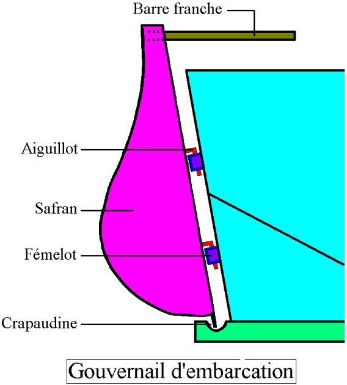
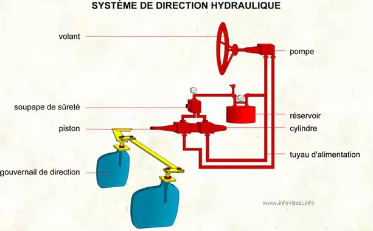
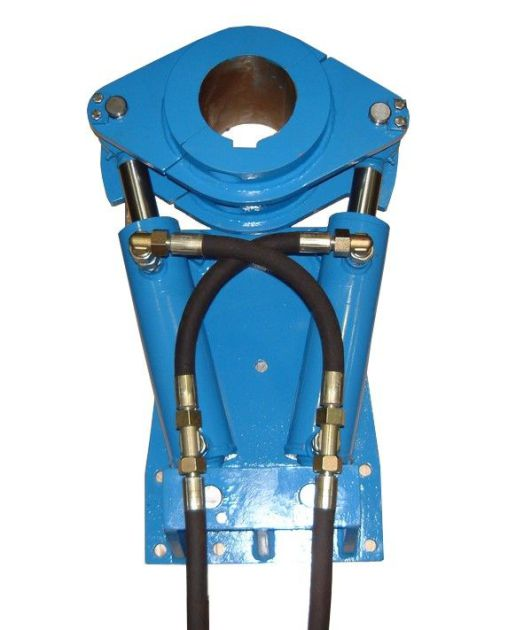
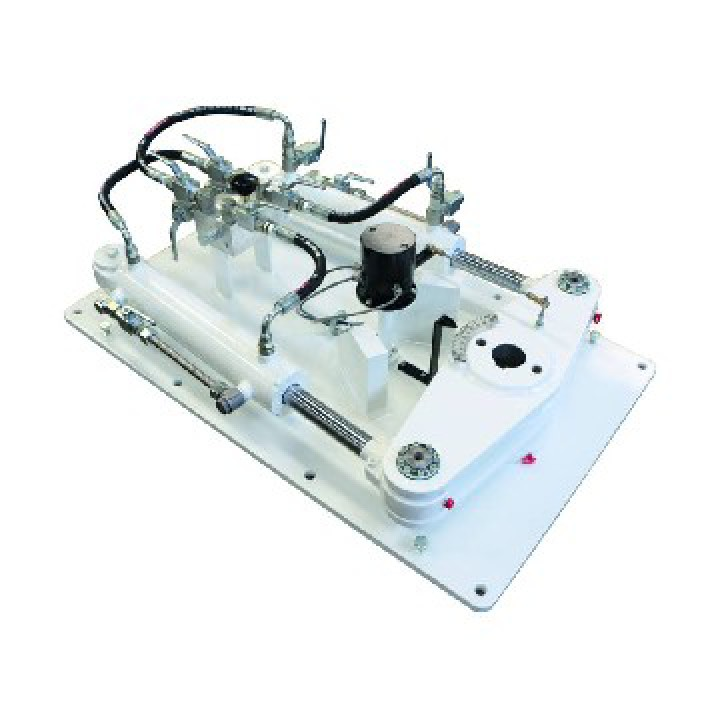
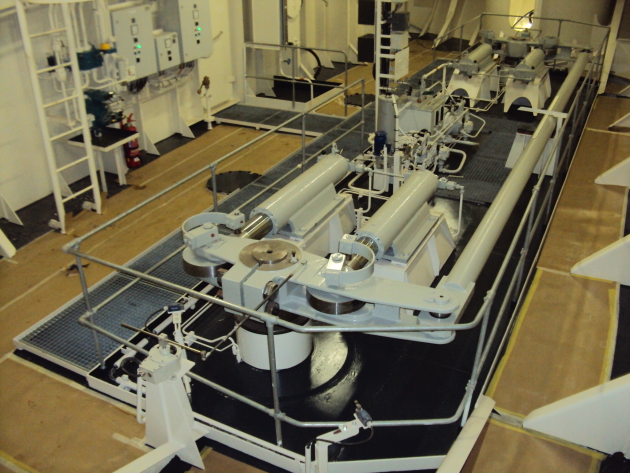
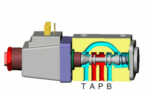
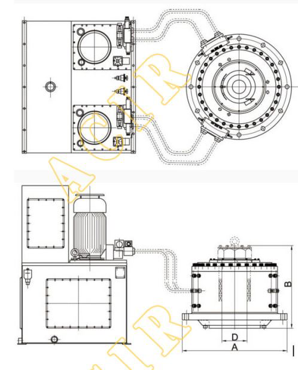
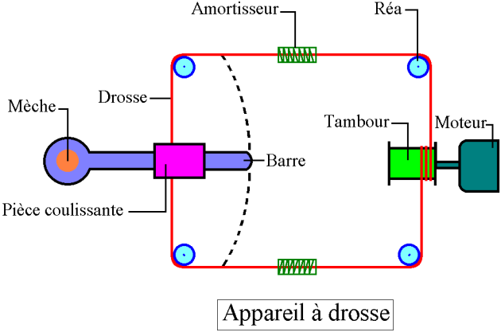
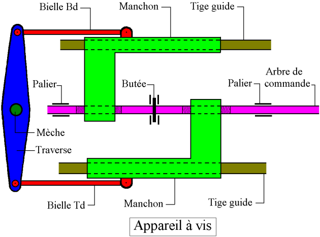
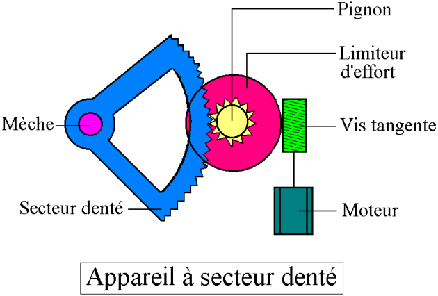

CONSTRUCTION DU NAVIRE
contenu
menu
navigation
outils
Le moteur de barre et télécommande
barre franche

Barre hydraulique






A drosse

A vis sans fin

A secteur

Précédent
Suivant
COMPARTIMENTAGE
MANOEUVRABILITE
APPAREIL A GOUVERNER
L'appareil à gouverner
Le safran
Types de safran
Le moteur de barre et télécommande
La barre
Accueil
Module